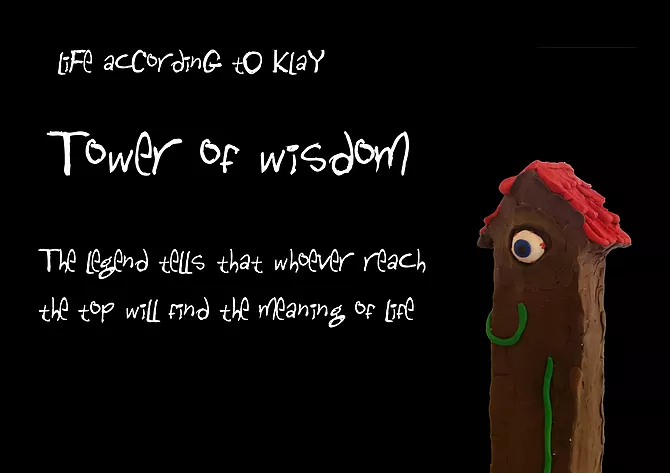
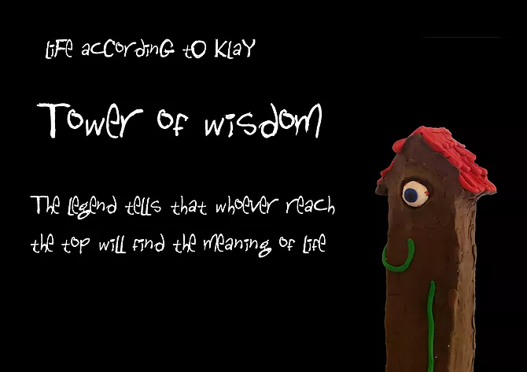

Life According to Klay
"Life According to Klay" is my final project in art class in the Hebrew Reali School of Haifa. It is a sculpture of my height, made out of wood, plaster, and plasticine.
The sculpture is a model of a small world, divided into foor parts, which are connected through "doors", so you could actually walk around this world if you were little enough.
The design and art are inspired from the game "The Neverhood" by Doug TenNapel.
The Zones
 
